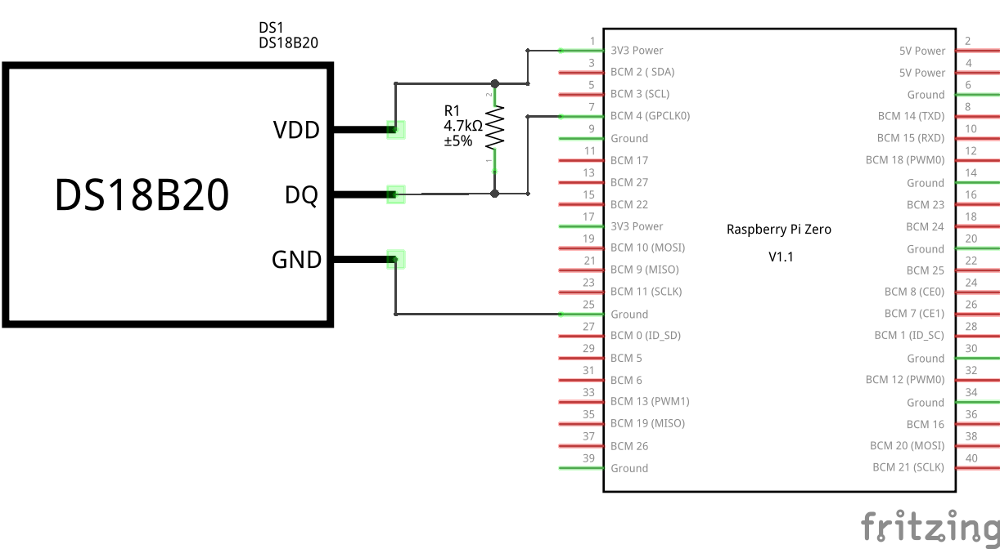
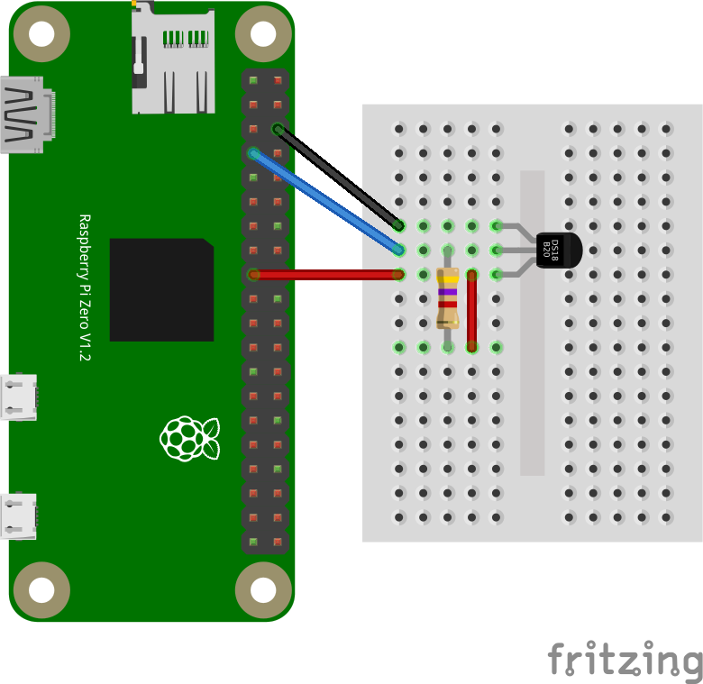

Mit dem günstigen Sensor DS18B20 und einem Widerstand kann ganz einfach über einen GPIO Pin die Umgebungstemperatur ausgelesen werden. Dazu wird noch nicht mal eine Library oder ein Programm benötigt. Alles Nötige ist im Linux-Kernel integriert.
Beschreibung
Mit dem 1-Wire Sensor DS18B20 von Dallas oder einen eine kompatiblen Sensor, kann ganz einfach die Umgebungstemperatur gemessen werden. Man benötigt lediglich den Sensor einen Pull-up Widerstand und einen Device Tree Eintrag in der Konfigurationsdatei. Dann steht der Temperaturwert über das virtuelle Filesystem zur Verfügung. Eine extra Software oder Library ist nicht nötig.
Anschluss
Der 1-Wire Sensor wird mit 3,3 V versorgt und über den GPIO-Pin 4 erfolgt die standardisierte Kommunikation. Lediglich einen zusätzlichen Pull-up Widerstand mit 4,7 KOhm muss man noch hinzuschalten.


Konfiguration
Es muss lediglich der 1-Wire-Bus über einen Device Tree Eintrag in der Konfigurationsdatei “config.txt” parametriert werden. Dadurch werden automatisch beim Starten die entsprechenden Kernel-Module (w1_gpio, w1_therm und wire) geladen.
dtoverlay=w1-gpio,gpiopin=4,pullup=on
Im Betrieb kann das Kernelmodul mit folgendem Aufruf geladen werden:
sudo dtoverlay w1-gpio gpiopin=4 pullup=on
Zugriff
Nach einem Neustart ist bereits alles geladen und der Sensor über das virtuelle Dateisystem auslesbar. Die Identifizierung aller Sensoren erfolgt über eine eindeutige ID-Nummer, die in der Datei “w1_master_slaves” aufgelistet sind.
ls /sys/bus/w1/devices/
28-03089779799c w1_bus_master1
cat /sys/bus/w1/devices/w1_bus_master1/w1_master_slaves
28-03089779799c
cat /sys/bus/w1/devices/28-03089779799c/w1_slave
8d 01 55 05 7f a5 a5 66 9c : crc=9c YES
8d 01 55 05 7f a5 a5 66 9c t=24812
Der ausgelesene Wert t muss noch durch 1000 dividiert werden um auf °C zu kommen. Diese Aufgabe kann man auch mit einem kleinen Python Programm ‘/usr/local/bin/w1-temp.py’ umsetzen.
|
|
python3 /usr/local/bin/w1-temp.py
26.2 °C